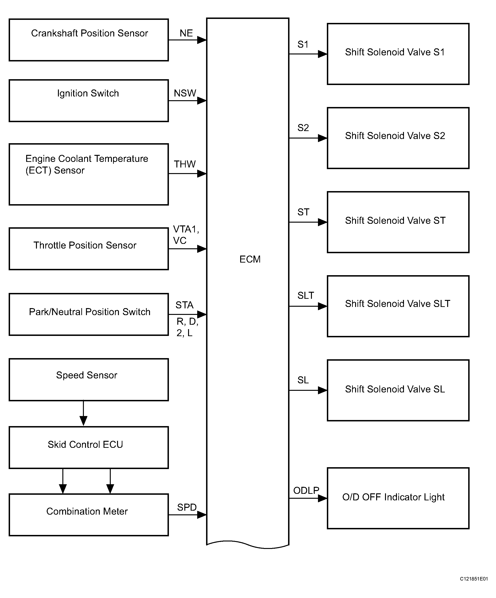
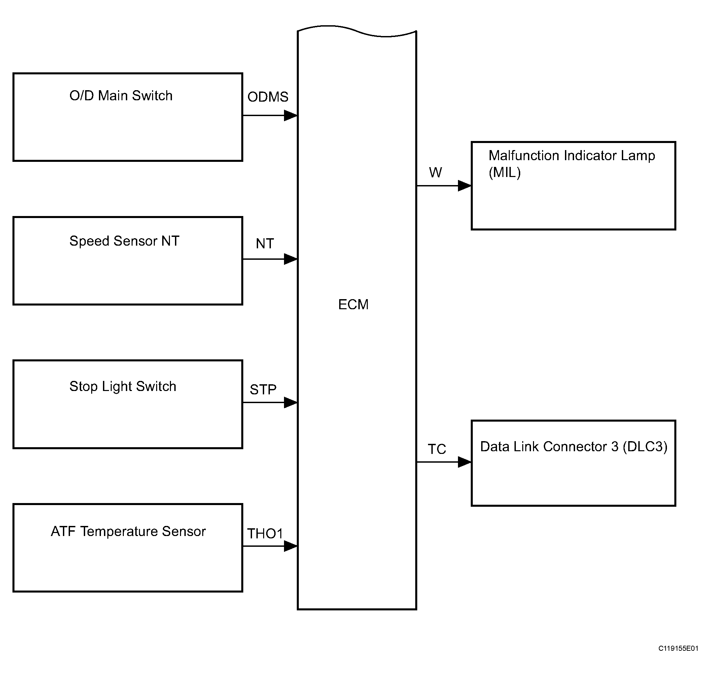
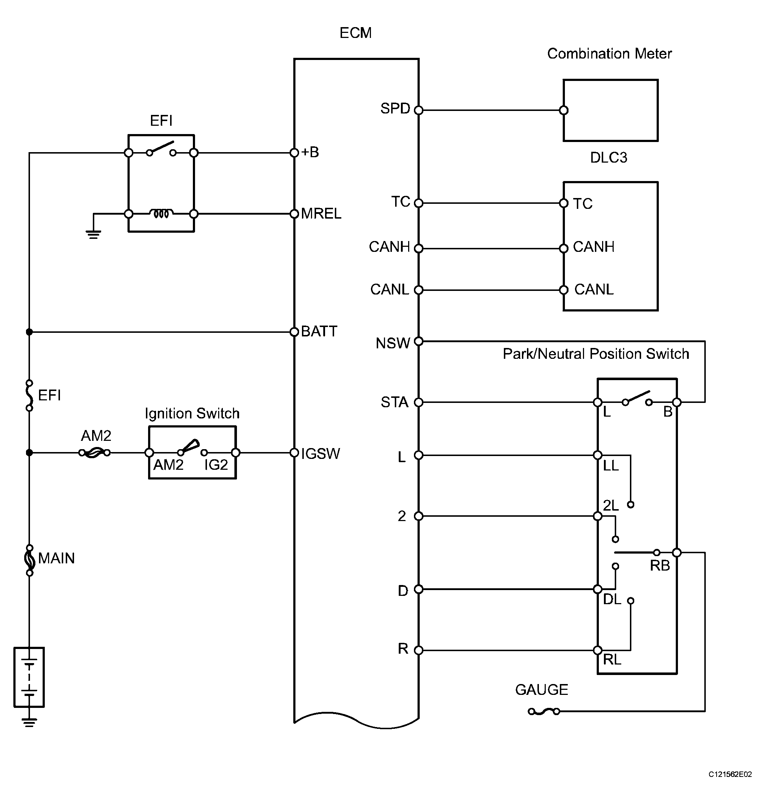

System Diagram
WARNING: This page is about a different variant/trim than selected.
The configuration of the electronic control system in the U340E automatic transaxle is as shown in the following chart.

Courtesy of © TOYOTA, LICENSE AGREEMENT TMS1002
Courtesy of © TOYOTA, LICENSE AGREEMENT TMS1002
Courtesy of © TOYOTA, LICENSE AGREEMENT TMS1002